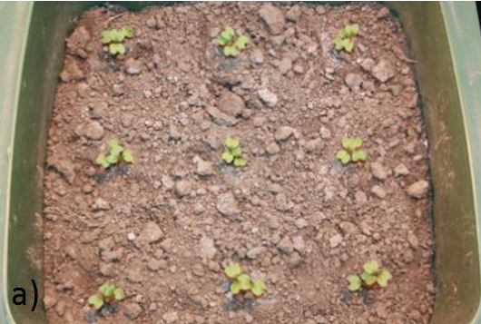
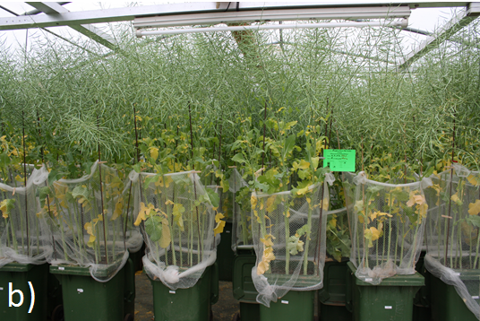
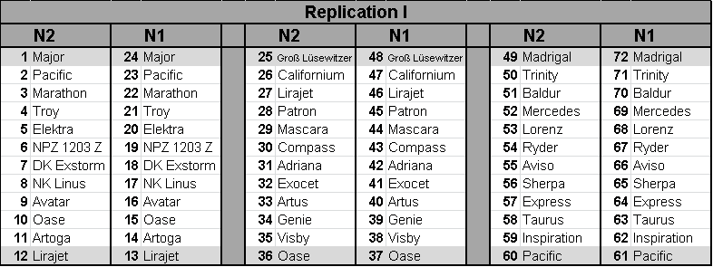
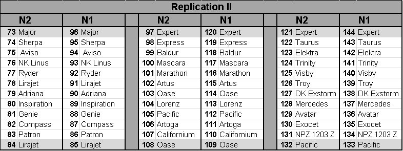
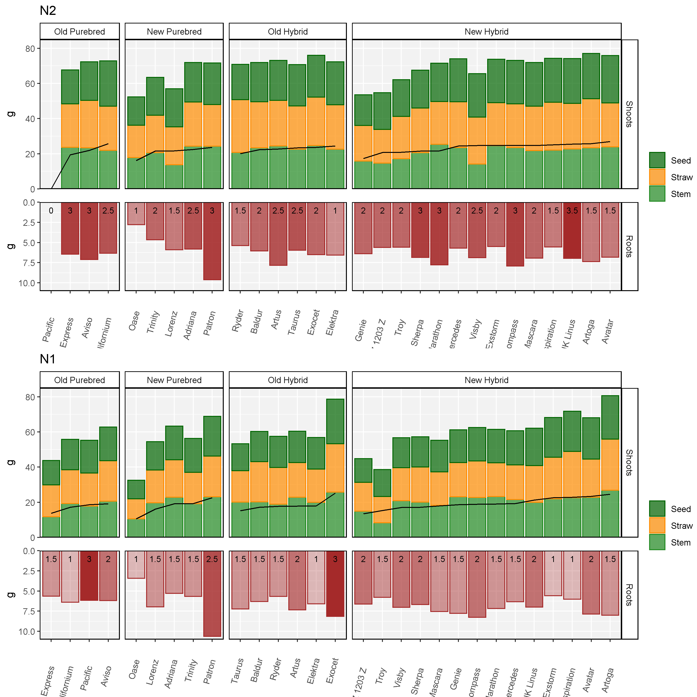
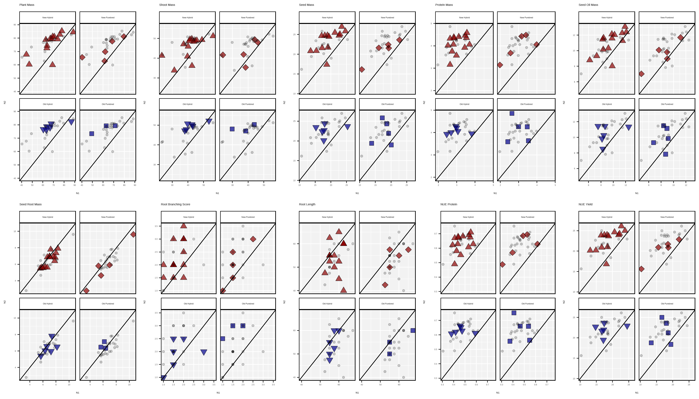
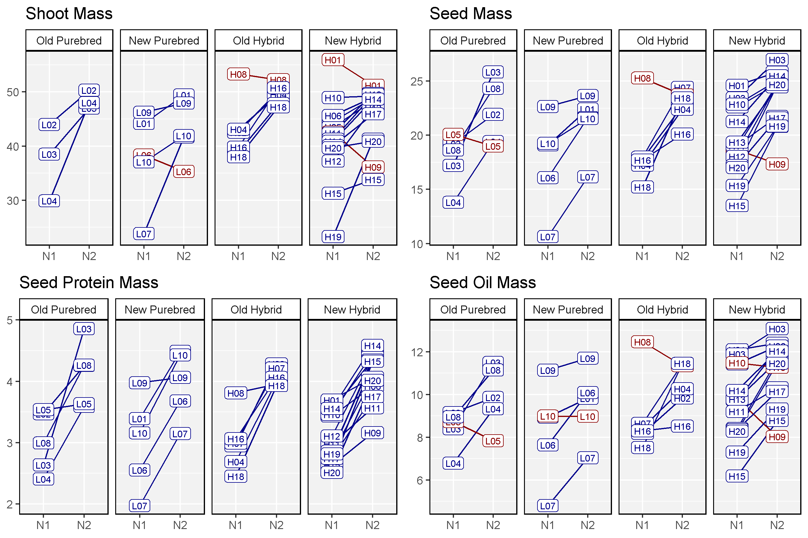
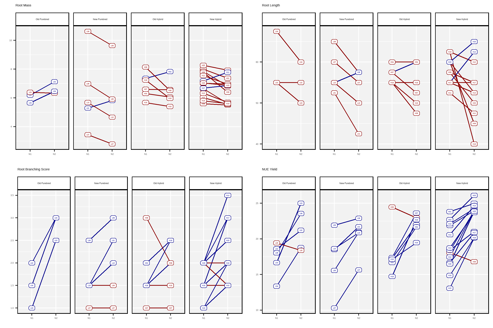
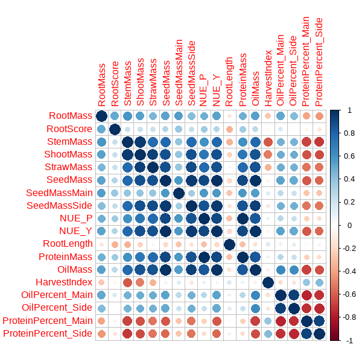
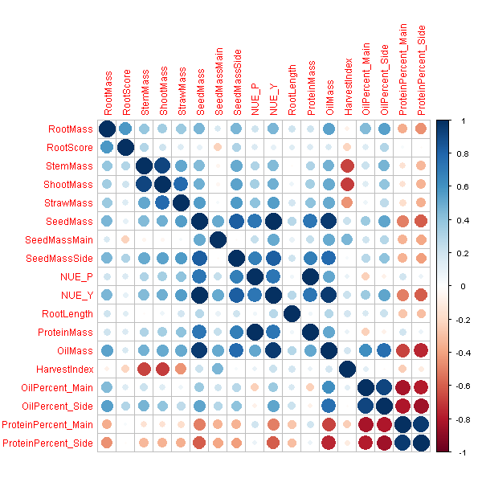

This is a vignette for my Masters thesis titled “Influence of heterozygosity on nitrogen use efficiency in hybrid and purebred lines of Brassica napus (L.)”.
Department of Agronomy and Plant Breeding I, Justus-Liebig-Universität, Gießen 35392, Germany
Thirty Brassica napus cultivars, 20 hybrid and 10 purebred lines, both old and new, were grown in a greenhouse under two fertilizer treatments: no N fertilization (N1) and 200 kg N/ha (N2). For each experimental replicate of genotype and fertilizer treatment, nine plants were grown in containers of 0.16 m2 surface area, filled with 147.5 kg of soil with a dry matter content of 88.2% (130.1 kg dry mass), in the layout described below.
Plant root mass, shoot mass, straw mass and seed mass was recorded, along with (NIRS) of seed for oil and protein content. Note: For plant shoots, 2 of the 9 plants were used for another study and not inluded in total mass measurements




\(NUE=N_{in Seed}/N_{Available}\)
Calculation of N fertilizatio when 1.6g N is added to container:
\((1.6gN)*(\frac{1kg}{1000g})*(\frac{1}{0.16m^2})*(\frac{10000m^2}{1ha})=100\frac{kgN}{ha}\)
N1 - Calculation of available N in soil
\(N1=\frac{44.65\frac{mgNO_3}{kgsoil}+2.15\frac{mgNH_4}{kgsoil}*(130.1kgsoil)}{9plants}=677\frac{mgN}{perplant}\)
N2 - Calculation of available N with fertilization of 200 kg N/ha
\(N2=677\frac{mgN}{perplant}+\frac{2*(1600mgN)}{9plants}=1033\frac{mgN}{perplant}\)
# devtools::install_github("derekmichaelwright/agData")
library(agData) # Loads: tidyverse, ggpubr, ggbeeswarm, ggrepel
library(readxl) # read_xlsx# Cultivar data
cultivarTypes <- c("Old Purebred", "New Purebred", "Old Hybrid", "New Hybrid")
r1 <- read_xlsx("canola_nue_data.xlsx", "CultData") %>%
mutate(Hybrid = plyr::mapvalues(Hybrid, c("H", "P"), c("Hybrid", "Purebred")),
Age = plyr::mapvalues(Age, c("N", "O"), c("New", "Old")),
Type = factor(paste(Age, Hybrid), levels = cultivarTypes))
# Container data
r2 <- read_xlsx("canola_nue_data.xlsx", "ContData") %>%
mutate(Nlevel = paste0("N", Nlevel))
# Plant data
r3 <- read_xlsx("canola_nue_data.xlsx", "PlantData")
# NIRS data main
r4 <- read_xlsx("canola_nue_data.xlsx", "NIRSmainRaw") %>%
mutate(ErucicAcidPercent = ifelse(ErucicAcidPercent < 0, 0, ErucicAcidPercent),
DryContent = 100 - WaterPercent) %>%
group_by(Container) %>%
summarise_all(funs(mean), na.rm = T)
colnames(r4) <- paste0(colnames(r4),"_Main")
colnames(r4)[1] <- "Container"
# NIRS data side
r5 <- read_xlsx("canola_nue_data.xlsx", "NIRSsideRaw")
r5 <- r5 %>% mutate(DryContent = 100 - WaterPercent) %>%
mutate(ErucicAcidPercent = ifelse(ErucicAcidPercent < 0, 0, ErucicAcidPercent),
DryContent = 100 - WaterPercent) %>%
group_by(Container) %>%
summarise_all(funs(mean), na.rm = T)
colnames(r5) <- paste0(colnames(r5),"_Side")
colnames(r5)[1] <- "Container"Notes:
rr <- left_join(r2, r1, by = c("Genotype"="Cultivar")) %>%
left_join(r3, by = "Container") %>%
left_join(r4, by = "Container") %>%
left_join(r5, by = "Container") %>%
mutate(RootMass = RootMass / 9,
StemMass = (StemMass1 + StemMass2) / 7,
StrawMass = (StrawMassMain + StrawMassSide) / 7,
ShootMass = StemMass + StrawMass,
SeedMassMainDry = SeedMassMain * DryContent_Main / 100 / 7,
SeedMassSideDry = SeedMassSide * DryContent_Side / 100 / 7,
SeedMass = SeedMassMainDry + SeedMassSideDry,
PlantMass = RootMass + StemMass + StrawMass + SeedMass,
HarvestIndex = SeedMass / ShootMass,
OilMassMain = OilPercent_Main * SeedMassMainDry / 100,
OilMassSide = OilPercent_Side * SeedMassSideDry / 100,
OilMass = OilMassMain + OilMassSide,
ProteinMassMain = ProteinPercent_Main * SeedMassMainDry / 100,
ProteinMassSide = ProteinPercent_Side * SeedMassSideDry / 100,
ProteinMass = ProteinMassMain + ProteinMassSide,
N_Available = ifelse(Nlevel == 1, 677, 1033),
NUE_P = ProteinMass * 0.16 / N_Available * 1000,
NUE_Y = SeedMass / N_Available * 1000) %>%
select(Container, Nlevel, AvailableN, Rep, Edge,
Genotype, CultLabel, CultNumber, Hybrid, Age, Type, Breeder,
RootMass, StemMass, StrawMass, ShootMass, SeedMass,
NUE_P, NUE_Y, everything()) %>%
filter(Edge == "F")
trts <- colnames(rr)[13:ncol(rr)]
xx <- rr %>% group_by(Nlevel, Genotype, CultLabel, Hybrid, Age, Type, Breeder) %>%
summarise_at(vars(trts), funs(mean), na.rm = T) %>%
ungroup()
xx_sd <- rr %>% group_by(Nlevel, Genotype, CultLabel, Hybrid, Age, Type, Breeder) %>%
summarise_at(vars(trts), funs(sd), na.rm = T) %>%
ungroup()gg_PlantMass <- function(nlev) {
x1 <- xx %>%
mutate(SeedMass = ifelse(Genotype == "Pacific" & Nlevel == "N2", 0, SeedMass),
StrawMass = ifelse(Genotype == "Pacific" & Nlevel == "N2", 0, StrawMass),
StemMass = ifelse(Genotype == "Pacific" & Nlevel == "N2", 0, StemMass),
RootMass = ifelse(Genotype == "Pacific" & Nlevel == "N2", 0, RootMass),
RootScore = ifelse(Genotype == "Pacific" & Nlevel == "N2", 0, RootScore))
genoOrder <- x1 %>%
filter(Nlevel == nlev) %>%
arrange(SeedMass, Type) %>%
pull(Genotype)
xi <- x1 %>%
filter(Nlevel == nlev, !is.na(StemMass), !is.na(StrawMass),
!is.na(SeedMass), !is.na(RootMass))
traits1 <- c("SeedMass","StrawMass","StemMass","RootMass")
traits2 <- c("Seed","Straw","Stem","Roots")
colors <- c("darkgreen","darkorange","forestgreen","brown")
xs <- xi %>%
select(Genotype, Hybrid, Type, StemMass, StrawMass, SeedMass) %>%
gather(Trait, Value, StemMass, StrawMass, SeedMass) %>%
mutate(Genotype = factor(Genotype, levels = genoOrder),
Trait = plyr::mapvalues(Trait, traits1, traits2),
Trait = factor(Trait, levels = traits2))
xr <- xi %>% rename(Value=RootMass) %>%
mutate(Genotype = factor(Genotype, levels = genoOrder),
Trait = "Roots",
Trait = factor(Trait, levels = traits2))
mp1 <- ggplot(xs, aes(x = Genotype, y = Value, fill = Trait, group = Trait)) +
geom_bar(stat= "identity", aes(color = Trait)) +
geom_line(data = xs %>% filter(Trait == "Seed"), color = "black") +
facet_grid("Shoots" ~ Type, scales= "free_x", space = "free_x") +
scale_y_continuous(limits = c(0,85), expand = c(0,0)) +
scale_color_manual(name = NULL, breaks = traits2, labels = traits2, values = colors) +
scale_fill_manual(name = NULL, breaks = traits2, labels = traits2, values = alpha(colors,0.7)) +
theme_agData(axis.text.x = element_blank(),
axis.ticks.x = element_blank()) +
labs(title = nlev, x = NULL, y = "g")
mp2 <- ggplot(xr, aes(x = Genotype, y = Value)) +
geom_bar(stat = "identity", aes(fill = RootScore, color = "Roots")) +
geom_text(aes(label = RootScore, y = 1), size = 3) +
facet_grid("Roots" ~ Type, scales= "free_x", space = "free_x") +
scale_y_reverse(limits = c(11,0), expand = c(0,0)) +
scale_color_manual(guide = F, values = "brown") +
scale_fill_continuous(guide = F, low = alpha("brown",0.3), high = alpha("brown",1)) +
theme_agData(rotx = T, strip.text.x = element_blank()) +
labs(y = "g", x = NULL)
ggarrange(mp1, mp2, ncol = 1, align = "v", heights = c(1.3,1),
legend = "right", common.legend = T)
}
#
mp1 <- gg_PlantMass("N2")
mp2 <- gg_PlantMass("N1")
mp <- ggarrange(mp1, mp2, ncol = 1)
ggsave("Figure01.png", mp, width = 10, height = 10)
gg_Corr <- function(trait = "NUE_P", title = trait) {
xi <- xx %>% select(Genotype, Type, Nlevel, Hybrid, Value=trait) %>%
spread(Nlevel, Value)
mymin <- min(xi$N1, xi$N2, na.rm = T)
mymax <- max(xi$N1, xi$N2, na.rm = T)
x2 <- bind_rows(xi %>% filter(Type != "Old Purebred") %>% mutate(Type = "Old Purebred"),
xi %>% filter(Type != "New Purebred") %>% mutate(Type = "New Purebred"),
xi %>% filter(Type != "Old Hybrid") %>% mutate(Type = "Old Hybrid"),
xi %>% filter(Type != "New Hybrid") %>% mutate(Type = "New Hybrid") )
ggplot(xi, aes(x = N1, y = N2)) +
geom_point(aes(shape = Type, fill = Type), size = 3, alpha = 0.7) +
geom_point(data = x2, alpha = 0.2) + geom_abline() +
facet_wrap(Type~., ncol = 2) +
scale_fill_manual(values = c("darkblue","darkred","darkblue","darkred")) +
scale_shape_manual(values = c(22,23,25,24)) +
coord_cartesian(xlim = c(mymin, mymax), ylim = c(mymin, mymax)) +
theme_agData(legend.position = "none") +
labs(title = title)
}
mp01 <- gg_Corr("PlantMass", "Plant Mass")
mp02 <- gg_Corr("ShootMass", "Shoot Mass")
mp03 <- gg_Corr("SeedMass", "Seed Mass")
mp04 <- gg_Corr("ProteinMass", "Protein Mass")
mp05 <- gg_Corr("OilMass", "Seed Oil Mass")
mp06 <- gg_Corr("RootMass", "Seed Root Mass")
mp07 <- gg_Corr("RootScore", "Root Branching Score")
mp08 <- gg_Corr("RootLength", "Root Length")
mp09 <- gg_Corr("NUE_P", "NUE Protein")
mp10 <- gg_Corr("NUE_Y", "NUE Yield")
mp <- ggarrange(mp01, mp02, mp03, mp04, mp05,
mp06, mp07, mp08, mp09, mp10, ncol = 5, nrow = 2)
ggsave("Figure02.png", mp, width = 14, height = 8)
# Plotting function
gg_Diff <- function(trait = "ProteinMass", title = trait) {
xi <- xx %>%
rename(Value = trait) %>%
select(Nlevel, Genotype, CultLabel, Hybrid, Age, Type, Value) %>%
spread(Nlevel, Value) %>%
mutate(Diff = N2 - N1,
Diff2 = ifelse(Diff > 0, "Positive", "Negative"),
Diff2 = factor(Diff2, levels = c("Positive","Negative"))) %>%
gather(Nlevel, Value, N1, N2) %>%
filter(!is.na(Diff))
#
ggplot(xi, aes(x = Nlevel, y = Value, color = Diff2)) +
geom_line(aes(group = Genotype)) +
geom_label(aes(label = CultLabel), size = 2.5,
label.padding = unit(0.15, "lines")) +
facet_grid(. ~ Type) +
scale_color_manual(values = c("darkblue", "darkred")) +
theme_agData(legend.position = "none") +
labs(title = title, x = NULL, y = NULL)
}
# Plot
mp01 <- gg_Diff("ShootMass", "Shoot Mass")
mp02 <- gg_Diff("SeedMass", "Seed Mass")
mp03 <- gg_Diff("ProteinMass", "Seed Protein Mass")
mp04 <- gg_Diff("OilMass", "Seed Oil Mass")
mp05 <- gg_Diff("RootMass", "Root Mass")
mp06 <- gg_Diff("RootLength", "Root Length")
mp07 <- gg_Diff("RootScore", "Root Branching Score")
mp08 <- gg_Diff("NUE_Y", "NUE Yield")
mp <- ggarrange(mp01, mp02, mp03, mp04, ncol = 2, nrow = 2)
ggsave("Figure03.png", mp, width = 9, height = 6)
mp <- ggarrange(mp05, mp06, mp07, mp08, ncol = 2, nrow = 2)
ggsave("Figure04.png", mp, width = 9, height = 6)

library(corrplot)
traits <- c("RootMass", "RootScore", "StemMass", "ShootMass",
"StrawMass", #"StrawMassMain", "StrawMassSide",
"SeedMass", "SeedMassMain", "SeedMassSide",
"NUE_P", "NUE_Y", "RootLength",
"ProteinMass", "OilMass", "HarvestIndex",
"OilPercent_Main", "OilPercent_Side",
"ProteinPercent_Main", "ProteinPercent_Side")
m1 <- xx %>% filter(Nlevel == "N1", !is.na(RootMass)) %>% select(traits)
m2 <- xx %>% filter(Nlevel == "N2", !is.na(RootMass)) %>% select(traits)
#
png("Figure05.png", width = 600, height = 600)
mp1 <- corrplot(cor(m1), addrect=2)#order = "hclust",
dev.off()## png
## 2#
png("Figure06.png", width = 600, height = 600)
mp2 <- corrplot(cor(m2), addrect=2)
dev.off()## png
## 2

© Derek Michael Wright www.dblogr.com/